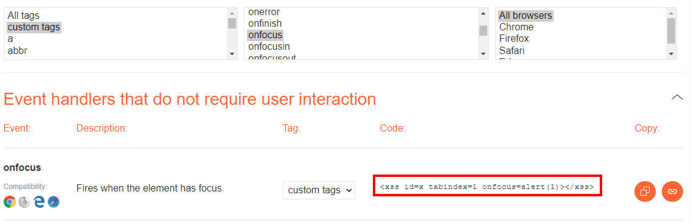

All Tags filtered --> try to use custom ones
If you didn't find any valid HTML tag, you could try to create a custom tag and and execute JS code with the an attribute (example:onfocus). In the XSS request, you need to end the URL with # to make the page focus on that object and execute the code:
0. Location of the Response with “payload” “204a2fb1”:

between HTML tags
1. Use Portswigger cheatsheet (https://portswigger.net/web-security/cross-site-scripting/cheat-sheet) and select “custom tags” that by default will use “xxs” as tag

2. Create our payload (example)
/?search=<MyTag id=x onfocus=alert(document.cookie) tabindex=1>#x
that encode will be
?search=%3CMyTag+id%3Dx+onfocus%3Dalert%28document.cookie%29%20tabindex=1%3E#x
If we visit this page (as a victim) the exploit will be triggered
Bibliography:
https://portswigger.net/web-security/cross-site-scripting/contexts/lab-html-context-with-all-standard-tags-blocked
https://book.hacktricks.xyz/pentesting-web/xss-cross-site-scripting#custom-tags